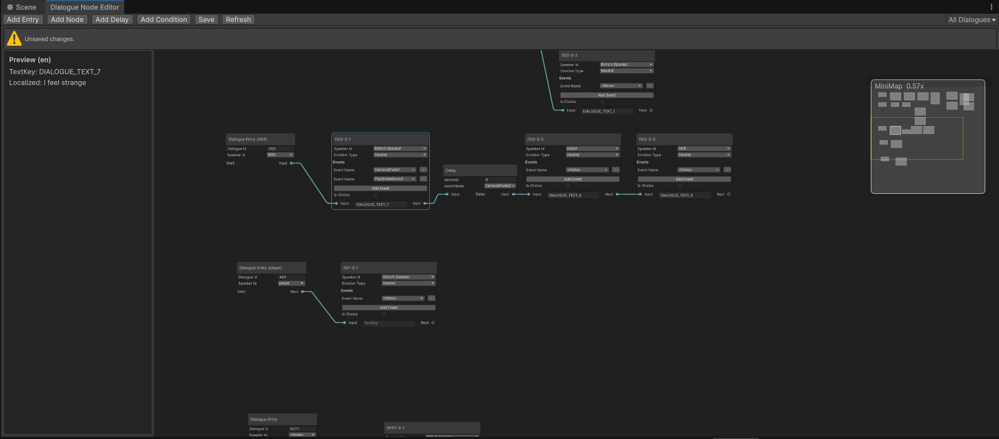
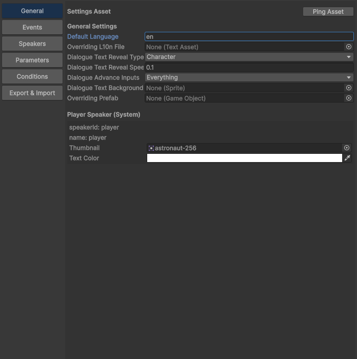
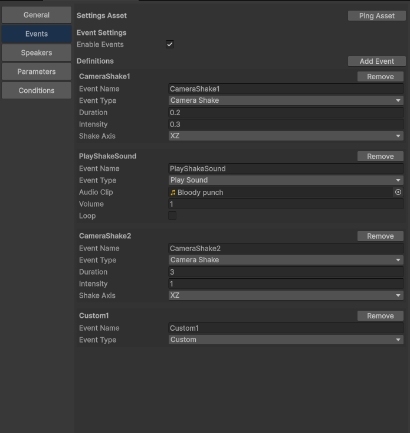
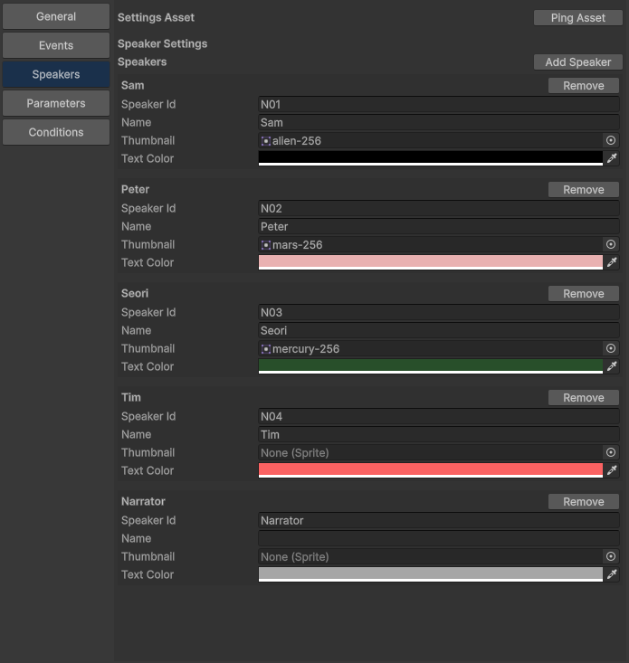
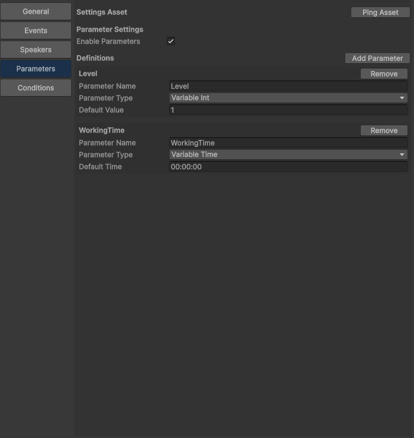
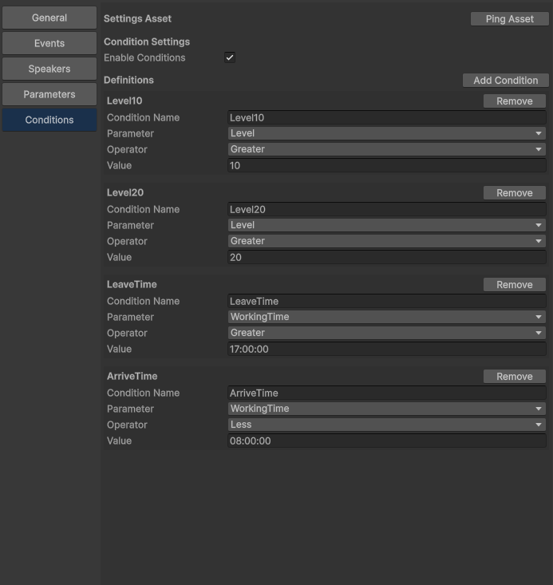

DialogueEngine Editor 가이드
대상: Dialogue Node Editor / Dialogue Engine Manager Editor
이 문서는 실제 에디터 화면 스크린샷을 기준으로, 각 화면의 역할과 사용 흐름을 정리합니다.
1) Dialogue Node Editor (GraphView)
경로: DialogueEngine/Dialogue Node Editor
대화 흐름을 노드 기반으로 편집하고 Save로 JSON에 저장하는 화면입니다.
- 상단 Toolbar:
Add Entry, Add Node, Add Delay, Add Condition, Save, Refresh
- 좌측 Preview 패널: 선택한 Text Node의
textKey와 기본 언어 기준 미리보기 표시
- 우측 상단 dialogueId 필터: 특정 대화만 골라서 표시
- 노드 연결로 흐름(next/choice 분기) 구성
- 변경 사항이 있으면 저장 상태 알림 표시, 저장 후 성공/경고/에러 알림 표시

Node Editor 작성 가이드
Add Entry 버튼으로 대화의 시작 노드(Entry)를 생성하고 dialogueId를 입력합니다.- 우측 상단의
dialogueId 드롭다운에서 특정 대화를 선택하면 해당 대화에 연결된 노드만 집중해서 볼 수 있습니다.
Add Node 버튼으로 대사(Text) 노드를 생성하고 textKey, speaker, 필요 시 event를 설정합니다.- 특정
dialogueId 필터 상태에서 Add Node, Add Delay, Add Condition를 생성하면 새 노드에 현재 dialogueId가 자동으로 들어갑니다. Add Entry는 예외입니다.
- Entry의
next 출력 포트를 Text Node의 input으로 연결해 시작 흐름을 만듭니다.
- 대사 사이를 계속 연결해 기본 진행 경로를 구성합니다. 분기가 필요하면
isChoice를 켜고 선택지와 분기 포트를 연결합니다.
- 대기/연출이 필요하면
Add Delay로 Delay 노드를 추가해 중간에 삽입합니다.
- 조건 분기가 필요하면
Add Condition으로 Condition 노드를 만들고 true/false 출력 각각을 다음 노드에 연결합니다.
Save를 눌러 JSON으로 저장합니다. 저장 후에는 상태 메시지로 성공/경고/오류를 확인합니다.- 파일을 다시 읽어 그래프를 최신 상태로 동기화하려면
Refresh를 사용합니다.
- 노드를 클릭하면 좌측 Preview 패널에 해당 노드의
textKey와 기본 언어 번역문이 표시되어, 실제 출력 문구를 빠르게 확인할 수 있습니다.
팁: 먼저 Entry와 핵심 Text Node들을 배치해 메인 흐름을 만든 뒤, Delay/Condition/Choice를 추가하면 구조를 관리하기 쉽습니다.
2) Dialogue Engine Manager Editor
경로: DialogueEngine/Dialogue Engine Manager
프로젝트 전역 설정(ScriptableObject)과 런타임 데이터 정의를 관리하는 화면입니다.
General 탭
언어, 텍스트 출력 방식, 진행 입력, 기본 UI 프리팹 등 엔진 전역 설정을 다룹니다.
| Field | Description |
|---|
defaultLanguage | 기본 언어 코드(예: ko, en) |
Overriding L10n File | 기본 DialogueTextData.json 대신 사용할 로컬라이제이션 JSON 파일(TextAsset). 지정 시 Node Preview와 런타임 모두 이 파일을 우선 사용 |
dialogueTextRevealType | 텍스트 출력 방식(즉시/글자 단위/단어 단위) |
dialogueTextRevealSpeed | 텍스트 출력 속도(간격) |
dialogueAdvanceInputs | 진행 입력 키 조합(마우스 좌클릭/Space/Enter) |
dialogueTextBackground | 대화 배경 스프라이트 |
Overriding Prefab | 기본 TextBox를 대체할 프리팹(IDialogueEngineTextBox 구현 필요) |
Player Speaker(System) | speakerId/name=player 고정, thumbnail과 textColor 설정 |

Events 탭
이벤트 이름과 타입(CameraShake, CameraMove, Sound 등)별 필드를 정의합니다.
| Field | Description |
|---|
enableEvents | 이벤트 시스템 사용 여부 |
eventName | 노드에서 참조할 이벤트 키 이름 |
eventType | 이벤트 동작 타입 |
CameraShake | duration, intensity, shakeAxis |
CameraMove | targetName, targetPosition, duration |
PlaySound | audioClip, volume, loop |
StopSound | targetName, fadeOut |

Speakers 탭
speakerId, 이름, 썸네일, 텍스트 색상 등 화자 표시 정보를 정의합니다.
| Field | Description |
|---|
speakerId | 노드에서 선택하는 화자 식별자(고유 권장) |
name | UI에 표시할 화자 이름 |
thumbnail | 화자 썸네일 |
textColor | 화자 대사 텍스트 색상 |
player | 이 탭에서 편집하지 않고 General 탭의 Player Speaker 영역에서 관리 |

Parameters 탭
조건 평가에 사용할 파라미터 타입과 기본값을 설정합니다.
| Field | Description |
|---|
enableParameters | 파라미터 시스템 사용 여부 |
parameterName | 파라미터 키 이름 |
parameterType | Bool / Int / Float / String / Time 타입 |
Default Value | 타입별 기본값 |
VariableTime | 기본값은 hh:mm:ss 형식만 허용 |

Conditions 탭
미리 정의된 파라미터 기준으로 조건식을 만들고 분기 로직에 사용합니다.
| Field | Description |
|---|
enableConditions | 조건 시스템 사용 여부 |
conditionName | Graph의 Condition Node에서 선택할 조건 이름 |
Parameter | Parameters 탭에서 미리 정의한 항목만 선택 가능 |
Operator | 타입별 허용 비교 연산자 자동 제한 |
Value | 선택된 Parameter 타입에 맞는 비교값 입력 |

3) L10N 파일 구조와 Override
기본 대사 번역 파일은 아래 경로를 사용합니다.
Assets/DialogueEngine/Resources/DialogueEngineResources/DialogueTextData.json
기본 구조는 textKey를 키로 사용하고, 내부에 언어 코드별 문자열을 넣는 형태입니다.
{
"GENERAL_HELLO": {
"ko": "안녕하세요",
"en": "Hello"
},
"NPC_GREETING": {
"ko": "어서 오세요",
"en": "Welcome"
}
}
General 탭의 Overriding L10n File에 다른 TextAsset JSON을 지정하면,
기본 DialogueTextData.json 대신 해당 파일을 사용합니다.
- Node Editor의 Preview 패널도 override 파일 기준으로 번역문을 표시합니다.
- 런타임
DialogueEngineManager.Init 이후 실제 대사 출력도 override 파일 기준으로 동작합니다.
- 비워두면 기본 파일인
DialogueTextData.json을 사용합니다.
4) Export & Import
경로: DialogueEngine/Dialogue Engine Manager → Export & Import 탭
설정 데이터와 대화 JSON을 외부 파일로 내보내거나 다시 불러오는 기능입니다.
| Button | Description |
|---|
Export All | Manager 설정과 Dialogue JSON을 하나의 파일로 함께 내보냅니다. |
Export Manager | General / Events / Speakers / Parameters / Conditions 설정만 내보냅니다. |
Export Dialogue | GraphView의 DialogueData.json 내용만 내보냅니다. |
Import | Export All 또는 Export Manager로 만든 JSON을 읽어 Manager 설정을 복원합니다. |
Export 시 Unity Object 참조(예: 썸네일, 사운드, 프리팹)는 에셋 경로 문자열로 저장됩니다.
Import 시 해당 경로의 에셋이 존재하면 다시 연결하고, 없으면 비워둡니다.
Export All 파일에는 settings와 dialogue가 같이 들어갑니다.- 현재
Import는 Manager 설정 복원 기준입니다. 즉 General/Events/Speakers/Parameters/Conditions를 복원합니다.
- 잘못된 포맷의 JSON은 기존 설정을 지우지 않고 import를 중단합니다.
권장 작업 순서
- Manager Editor에서 Speakers/Parameters/Conditions/Events를 먼저 정의
- Node Editor에서 Entry부터 대화 흐름 노드 그래프 구성
- 필요한 노드에 condition/event/choice 설정 후
Save
- 런타임에서
DialogueEngineManager.Init 후 StartDialogue(dialogueId) 호출